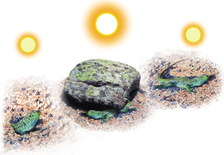
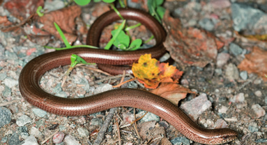

Explica si las escamas son estructuras protectoras exclusivas de los peces.
Investiga sobre las aletas de un pez y elabora un mural, utilizando imágenes, en el que incluyas las aletas pares e impares y nombres cada una. A continuación, busca algún video sobre peces y explica la función de cada tipo de aleta. Añade esta información a tu mural y compártelo con el resto de la clase.
Existen especies migratorias de peces, por ejemplo las anguilas y los salmones. Las primeras se consideran peces catádromos, y los segundos, anádromos. ¿Qué significan estos términos?
Explica por qué las branquias son de color rojo.
¿Qué gases se intercambian en las branquias? Representa en un esquema el sentido que llevan.
¿Qué características de los peces están relacionadas con su adaptación al medio acuático? ¿Sufrirán algún cambio debido a la crisis climática? Investiga el impacto del cambio climático en los peces y haz un informe.
Clasifica estos peces en cartilaginosos o óseos: tiburón, anguila, dorada, raya, torpedo, atún, boquerón y merluza.
Existen unos peces que se clasifican como pulmonares. Busca información sobre este grupo y haz una breve descripción de sus características. Indica las fuentes consultadas.
¿Por qué los anfibios reciben este nombre?
¿Tienen las ranas y los renacuajos la misma dieta? ¿A qué crees que se debe este hecho?
¿A qué se debe el hecho de que una serpiente pueda tragarse una presa de mayor tamaño que ella?
Investiga por qué las serpientes sacan la lengua repetidamente al desplazarse. Indica fuentes que has consultado.
En el norte de España existen unos lagartos, los luciones, que carecen de patas, por lo que se podría pensar que son serpientes. ¿Qué rasgo crees que han observado los científicos para considerarlos lagartos?
Imágenes de vertebrados

Hábitat del lagarto

Serpiente marrón en el suelo
Interpretación de la secuencia
Interpreta la secuencia representada en el siguiente dibujo. ¿Qué crees que hará el lagarto por la noche? ¿Por qué?
Copiar la tabla
Copia la tabla en tu cuaderno y señala en ella los grupos que poseen las características indicadas.
Características
Peces
Anfibios
Reptiles
Tienen línea lateral.
✔️
Respiran por branquias.
✔️
Poseen escamas.
✔️
Las extremidades son aletas.
✔️
Preguntas adicionales
¿Por qué los peces y los reptiles se clasifican en grupos de vertebrados distintos, a pesar de que ambos tienen escamas?
¿Por qué algunos anfibios como la salamandra se confunden con reptiles como el lagarto? ¿Cómo los diferenciarías?
Explica qué grupo de vertebrados es más variado desde el punto de vista de la respiración: los peces, los anfibios o los reptiles.
¿Qué tienen en común una sardina, un sapo y una víbora? ¿Y una tortuga y un camaleón?